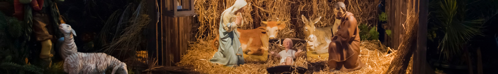
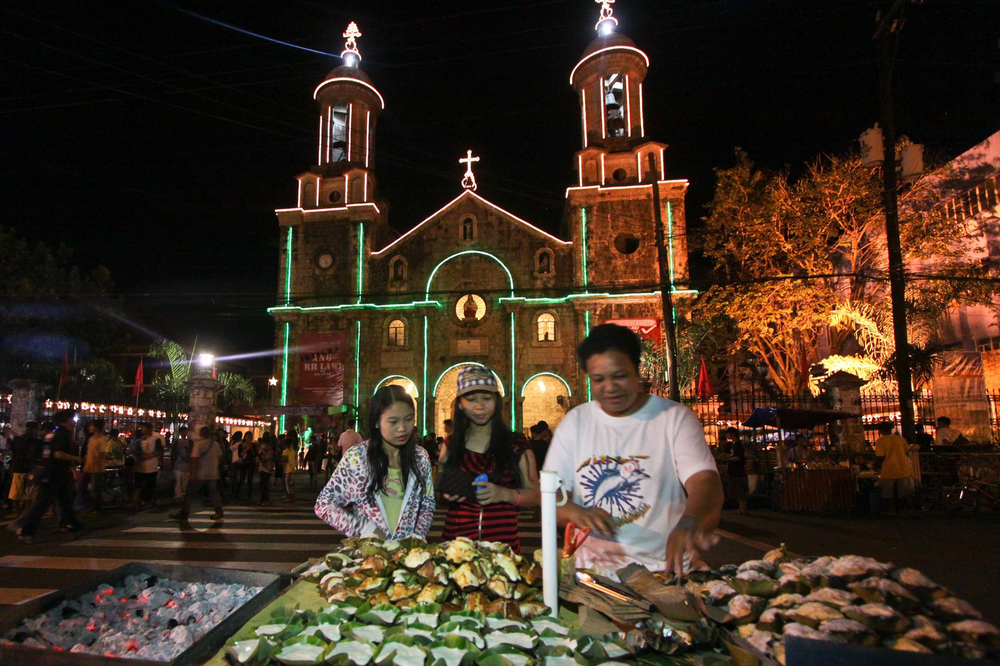
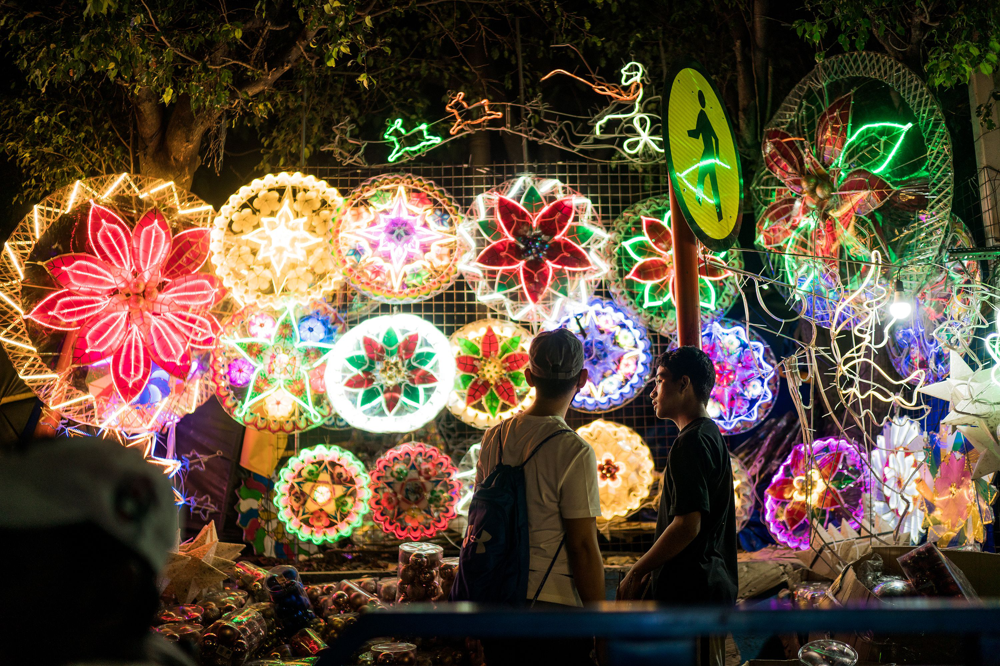
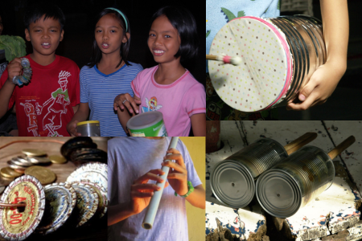
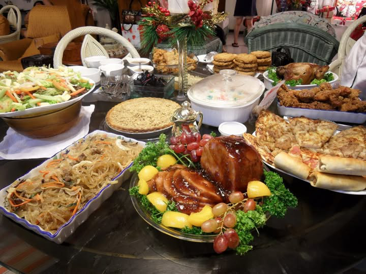
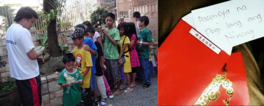

Christmas in the Philippines is more than just a holiday—it is a season of joy, faith, and family that lasts for months. It is the longest Christmas celebration in the world, starting as early as September and extending until January. Every year, Filipinos embrace the holiday spirit with festive decorations, joyful carols, religious traditions, and heartwarming family reunions.
It is the most important holiday in the Philippines because it reflects the country’s deep faith, strong family values, and love for celebration. As a predominantly Christian nation, Filipinos see Christmas as the birth of Jesus Christ, making it a time of prayer, gratitude, and generosity. Families reunite during this season, even those working abroad (OFWs) make every effort to come home and celebrate with their loved ones. Christmas in the Philippines is also a season of sharing and kindness, where communities come together to help the less fortunate through gift-giving and charity events. The festive atmosphere, filled with bright parols, joyful carols, and delicious feasts, makes Christmas a magical time for Filipinos of all ages.

The birth of Jesus Christ happened over 2,000 years ago in Bethlehem. According to the Bible, Mary and Joseph traveled there, but there was no room in the inn, so Jesus was born in a manger. Angels announced His birth to shepherds, and the Three Wise Men followed the Star of Bethlehem to bring gifts, believing He was the promised Savior.
People started celebrating Christmas in the 4th century when Pope Julius I set December 25 as the date for Jesus’ birth. This helped replace pagan festivals and spread Christianity. Over time, Christmas became a time of joy, faith, and giving, reminding people of love, kindness, and hope. Today, it is celebrated worldwide with prayers, family gatherings, and gift-giving to remember the message of Jesus.
🎵 Simbang GabiSimbang Gabi is a series of nine early morning Masses held from December 16 to 24. Devotees wake up as early as 3:00 AM to attend Mass in beautifully decorated churches, believing that completing all nine masses grants a special wish. Churches are illuminated with glowing parols, and after Mass, vendors sell traditional delicacies such as bibingka and puto bumbong.  |
🏡 ParolThe parol, a bright, star-shaped lantern, symbolizes the Star of Bethlehem. These lanterns, made from bamboo and colorful paper or capiz shells, light up homes, schools, and streets, spreading warmth and festivity. Lighting up the parol represents hope, guidance, and the welcoming spirit of Filipinos during Christmas. It serves as a reminder of the light that led the Three Wise Men to the newborn Jesus, symbolizing faith and the joy of the holiday season.  |
🎶 CarolingCaroling is a cherished Filipino Christmas tradition where children and adults go from house to house singing Christmas carols in exchange for coins or treats.
|
Many carolers, especially children, create their own makeshift musical instruments using recycled materials, making the experience more fun and creative.
 |
🍽️ Noche BuenaOn Christmas Eve, families gather for Noche Buena, a grand midnight feast featuring special dishes such as:
Families wait until midnight for Noche Buena as it marks the official arrival of Christmas Day, symbolizing joy, gratitude, and the shared anticipation of welcoming Christ’s birth together.  |
🎁 AguinaldoOn Christmas morning, children visit their godparents (ninong and ninang) to receive aguinaldo, which comes in the form of money, toys, or clothes. It is common to see children falling in line, patiently waiting for their turn. Once in front, they perform the respectful pagmamano gesture—taking the elder’s hand and pressing it to their forehead—before receiving their gift.  |
Christmas in the Philippines is a special time filled with faith, family, and fun traditions. From attending Simbang Gabi to enjoying a big Noche Buena feast, Filipinos celebrate with joy and togetherness. The bright parols, cheerful caroling, and giving of aguinaldo show the spirit of kindness and sharing. No matter where they are, Filipinos keep these traditions alive, making Christmas a time of love and happiness.
Despite challenges and hardships, Filipinos always find a reason to smile and spread love during Christmas.